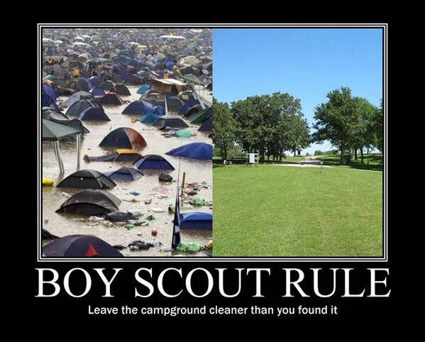

Here goes the boy scout rule :
Always check a module in cleaner than when you checked it out.
Unfortunately, this alone does not guarantee to keep the technical debt under control. What can we do then ?
Why the boy scout rule is not enough
I can easily think of a few issues that are not covered by the boy scout rule.
It only deals with local problems
In it’s statement, the boy scout rule is local and does not address large scale design or architecture issues. Applying the boy scout rule keeps files well written, using with clear and understandable code. From a larger perspective though, it does very little or slow improvement to the overall design.
These large scale refactorings are very difficult to deal with using the boy scout rule alone. It could be done but would require to share the refactoring goal with all the team, and then track its progress, while at the same time dealing with all the other subjects of the project. That’s starting to sound like multitasking to me.
It’s skill dependent
Another point about the boy scout rule (and to be fair, about any refactoring technique) is that programmers will be able to clean the code only as much as their skills allow them to !
Imagine what would happen when a new master developer arrives in a team of juniors, he’d spot a lot of technical debt and would suggest improvements and ways to clean the code. Code that was thought of as very clean would suddenly be downgraded to junk !
The point here is that the boy scout rule cannot guarantee that you have no technical debt, because you don’t know how much you have !
That’s where the debt metaphor reaches its limits and flips to some productivity investment. By investing time to perform some newly discovered refactoring, you could get a productivity boost !

Domain-Driven Design: Tackling Complexity in the Heart of Software, Eric Evans calls this knowledge distillation. He means that little by little, the team gains better understanding of the domain, sometimes going through what he calls a ‘breakthrough’. These breakthroughs often promote existing code to technical debt …
It’s context dependent
Developers alone are not the only one responsible for creating technical debt. Changes to the environment also do.
For example, if the market conditions change, and that new expectations for the product are slowly becoming the norm, your old perfectly working system becomes legacy and technical debt. As an example, let’s examine what happened to the capital markets software industry in response to the 2008 crisis.
- The sector became a lot more regulated
- Risk control is moving from nightly batches to real time
- The demand for complex (and risky) contracts decreased
- As a consequence, trading on simpler contracts exploded
All these elements combined invalidated existing architectures !
New technologies also create technical debt. Think the switch from mainframe to the web.
What do we need then ?
Should we stop using the boy scout rule ? Surely not, it would be a total non-sense. Submitting clean and readable code is a must.
But it is not enough. If you have spotted some large scale refactoring that could bring some improvement, we should do what a fund manager would do :
- Estimate the return on investment
- If it is good enough, do it now
Obviously, large refactorings should also be split into smaller value adding cost reducing items. But then what ?

In The Nature of Software Development Ron Jefferies says that we need a unique value-based prioritization strategy for everything, including technical improvements. Once you’ve got that, there’s no sense in splitting and embedding your refactoring in other tasks, this will just increase your work in progress, reducing your throughput and cycle time.
Frankly, I think that’s easier said than done. I can think of two ways :
- As Ron Jefferies tends to say, have a jelled-cross-functional team discuss and prioritize collectively
- As Don Reintersen advocates, use an economical framework to estimate the return on investment
At least that’s a starting point !